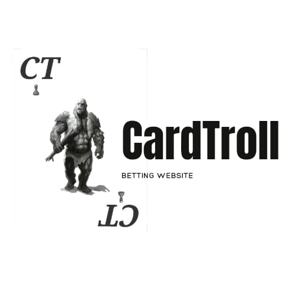

Get To Know CardTroll
About Us
A lot happened in 2002. The Euro was born, we began mapping the surface of mars, and CardTroll was founded. A lot has changed since then, but our drive to provide the best quality games and service to our players hasn’t.
CardTroll offers over games including slots, Live Casino, table games and much more, all available in easy-to-navigate lobbies. New games are released every month, and you’ll find plenty of games exclusive to play in just a few casinos, with us being one of the lucky few.
With over 15 years of experience, we’re constantly upgrading and modifying our website, our services and our casino promotions to give you, our players, the most rewarding gameplay. We’re proud of our award-winning customer service, with a Customer Support team available in 7 languages to help you in whatever you may need, whether you’re confused about bonuses or requesting help with withdrawals.
We’re driven by our players, and have over 100,000 players to thank for this. Our European community thrives on our passion for games, and when somebody wins, we all celebrate. You can read about CasinoEuro’s winners over the years right on our blog, and can discover the best jackpot games you should play if you think you could be our next big story.
We also understand that you’re busy, and like to have fun on the go, so we’ve provided a mobile casino that fits right into your pocket.
CardTroll provides an entertaining world to play in, but we also place high importance on ensuring all of our players play responsibly. We have plenty of tools to help you, from setting cooling-off periods to deposit limits, so you can enjoy yourself safely. To find out more, you can read our Responsible Gaming page or contact our Support team.
